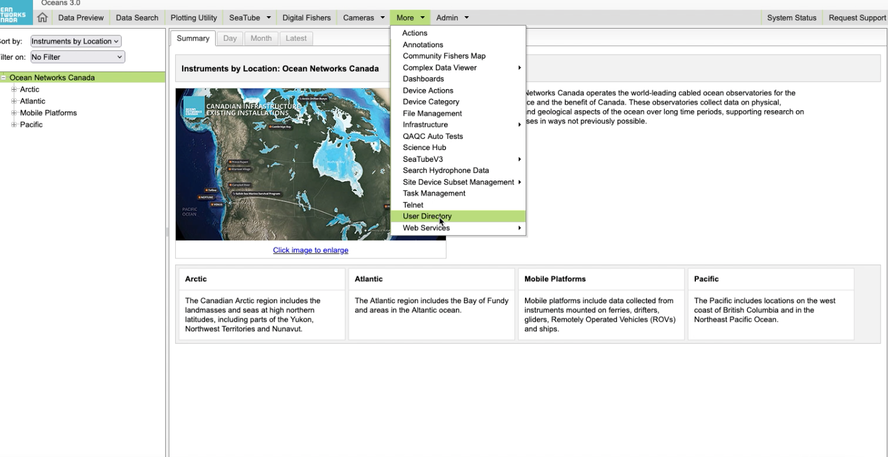

onc library tutorial
The onc library is developed based on the Python requests library, which is a popular library for making HTTP requests. In fact, you can use requests directly to interact with the Oceans 3.0 API. But there are cases when you will find the onc library useful (helper methods including boolean parse, one-click data product download, and ability to automatically download all pages). For more information you can check the Oceans 3.0 API guide.
This tutorial will demonstrate both approaches.
Tip
This is a Jupyter notebook. You can download the file here.
# Install some libraries
# 1. onc: this is an onc library tutorial, right?
# 2. request: an alternative (vanilla) way to make HTTP requests to Oceans 3.0 API.
# 3. pandas: because it's useful and fun!
import sys
!{sys.executable} -m pip install --upgrade requests pandas onc
Requirement already satisfied: requests in /opt/hostedtoolcache/Python/3.10.19/x64/lib/python3.10/site-packages (2.32.5)
Requirement already satisfied: pandas in /opt/hostedtoolcache/Python/3.10.19/x64/lib/python3.10/site-packages (2.3.3)
Requirement already satisfied: onc in /opt/hostedtoolcache/Python/3.10.19/x64/lib/python3.10/site-packages (2.6.0)
Requirement already satisfied: charset_normalizer<4,>=2 in /opt/hostedtoolcache/Python/3.10.19/x64/lib/python3.10/site-packages (from requests) (3.4.4)
Requirement already satisfied: idna<4,>=2.5 in /opt/hostedtoolcache/Python/3.10.19/x64/lib/python3.10/site-packages (from requests) (3.11)
Requirement already satisfied: urllib3<3,>=1.21.1 in /opt/hostedtoolcache/Python/3.10.19/x64/lib/python3.10/site-packages (from requests) (2.5.0)
Requirement already satisfied: certifi>=2017.4.17 in /opt/hostedtoolcache/Python/3.10.19/x64/lib/python3.10/site-packages (from requests) (2025.11.12)
Requirement already satisfied: numpy>=1.22.4 in /opt/hostedtoolcache/Python/3.10.19/x64/lib/python3.10/site-packages (from pandas) (2.2.6)
Requirement already satisfied: python-dateutil>=2.8.2 in /opt/hostedtoolcache/Python/3.10.19/x64/lib/python3.10/site-packages (from pandas) (2.9.0.post0)
Requirement already satisfied: pytz>=2020.1 in /opt/hostedtoolcache/Python/3.10.19/x64/lib/python3.10/site-packages (from pandas) (2025.2)
Requirement already satisfied: tzdata>=2022.7 in /opt/hostedtoolcache/Python/3.10.19/x64/lib/python3.10/site-packages (from pandas) (2025.2)
Requirement already satisfied: humanize in /opt/hostedtoolcache/Python/3.10.19/x64/lib/python3.10/site-packages (from onc) (4.14.0)
Requirement already satisfied: six>=1.5 in /opt/hostedtoolcache/Python/3.10.19/x64/lib/python3.10/site-packages (from python-dateutil>=2.8.2->pandas) (1.17.0)
To begin using the library, you need to create an instance from the ONC class, which is a wrapper class for Oceans 3.0 API requests.
All the library’s functionality is provided as methods of this class.
# Setting up onc
from onc import ONC
onc = ONC("YOUR_TOKEN")
Besides the token parameter, there are several other parameters you can modify to change the behavior of the ONC class. For example, you can use
onc = ONC("YOUR_TOKEN", showInfo=True, outPath="YOUR_DIRECTORY")
to indicate that you want to see verbose messages after running each method, and you want the download directory to be “./YOUR_DIRECTORY” instead of the default “./output” when calling methods that involve downloading files like orderDataProduct and downloadArchivefile.
You can also use onc = ONC() if you have set the env variable “ONC_TOKEN”.
For more information, check the API reference of the ONC class.
# Setting up requests
import requests
token = onc.token
# Setting up pandas
import pandas as pd
# For not overflowing the max-width of sphinx-rtd-theme. Can be safely ignored.
pd.set_option("display.max_colwidth", 30)
pd.set_option("display.max_columns", 5)
pd.set_option("display.max_rows", 5)
1. Searching with discovery services
To download data from Ocean Networks Canada’s database (Oceans 3.0) , you need to specify the type of data you are interested in and where in particular (i.e. location, from specific instrument (device)) it originates from.
In the Oceans 3.0 API, there are a unique codes that identify every location, device, property, data product type, etc. You include these codes in a group of filters to retrieve the information you’re interested in.
The Oceans 3.0 API Discovery services allow you to explore the hierarchy of ONC’s database to obtain the codes required for your filters to obtain the information/data you are interested in (they work like a “search” function).
The example below uses the getLocations method, which is querying the locations database tables that include “Bullseye” in their name (i.e. “Clayoquot Slope Bullseye Vent”). It returns a list with all locations that match the search filters provided.
Using ONC library
# 1. Define your filter parameter
params = {
"locationName": "Bullseye",
}
# 2. Call methods in the onc library
onc.getLocations(params)
[{'bbox': {'maxDepth': 1260.0,
'maxLat': 48.671024,
'maxLon': -126.847007,
'minDepth': 1253.0,
'minLat': 48.669525,
'minLon': -126.85184},
'dataSearchURL': 'https://data.oceannetworks.ca/DataSearch?location=NC89',
'deployments': 39,
'depth': 1256.830769,
'description': ' Bullseye is a location at Clayoquot Slope, where gas hydrates, seafloor cold seeps, and hydrate dynamics are observed.',
'hasDeviceData': True,
'hasPropertyData': False,
'lat': 48.670626,
'locationCode': 'NC89',
'locationName': 'Bullseye',
'lon': -126.848013}]
Using requests library
# 1. Define your filter parameter
params_requests = {
"locationName": "Bullseye",
"token": token,
}
# 2. Define your base url for this query
url = "http://data.oceannetworks.ca/api/locations"
# 3. Run your request
r = requests.get(url, params=params_requests)
# 4. Parse the json file
r.json()
[{'bbox': {'maxDepth': 1260.0,
'maxLat': 48.671024,
'maxLon': -126.847007,
'minDepth': 1253.0,
'minLat': 48.669525,
'minLon': -126.85184},
'dataSearchURL': 'https://data.oceannetworks.ca/DataSearch?location=NC89',
'deployments': 39,
'depth': 1256.830769,
'description': ' Bullseye is a location at Clayoquot Slope, where gas hydrates, seafloor cold seeps, and hydrate dynamics are observed.',
'hasDeviceData': 'true',
'hasPropertyData': 'false',
'lat': 48.670626,
'locationCode': 'NC89',
'locationName': 'Bullseye',
'lon': -126.848013}]
Each entry of this list contains more meta data information for that location, e.g. the locationName, the geographical coordinates and depth, a description field and the URL for Oceans 3.0 Data Search tool. The parameter locationCode contains the string “NC89”, which is needed for the next steps.
What device categories are available here at the location NC89?
Using ONC library
# 1. Define your filter parameter
params = {
"locationCode": "NC89",
}
# 2. Call methods in the onc library
result = onc.getDeviceCategories(params)
# 3. Read it into a DataFrame
pd.DataFrame(result)
| cvTerm | description | ... | hasDeviceData | longDescription | |
|---|---|---|---|---|---|
| 0 | {'deviceCategory': [{'uri'... | Acoustic Doppler Current P... | ... | True | Acoustic Doppler Current ... |
| 1 | {'deviceCategory': [{'uri'... | Acoustic Doppler Current P... | ... | True | Acoustic Doppler Current ... |
| ... | ... | ... | ... | ... | ... |
| 10 | {'deviceCategory': [{'uri'... | Tiltmeter | ... | True | A tiltmeter is a sensitiv... |
| 11 | {'deviceCategory': [{'uri'... | Video Camera | ... | True | Video cameras record vide... |
12 rows × 6 columns
Using requests library
# 1. Define your filter parameter
params_requests = {
"locationCode": "NC89",
"token": token,
}
# 2. Define your base url for this query
url = "http://data.oceannetworks.ca/api/deviceCategories"
# 3. Run your request
r = requests.get(url, params=params_requests)
# 4. Read it into a DataFrame
pd.DataFrame(r.json())
| cvTerm | description | ... | hasDeviceData | longDescription | |
|---|---|---|---|---|---|
| 0 | {'deviceCategory': [{'uri'... | Acoustic Doppler Current P... | ... | true | Acoustic Doppler Current ... |
| 1 | {'deviceCategory': [{'uri'... | Acoustic Doppler Current P... | ... | true | Acoustic Doppler Current ... |
| ... | ... | ... | ... | ... | ... |
| 10 | {'deviceCategory': [{'uri'... | Tiltmeter | ... | true | A tiltmeter is a sensitiv... |
| 11 | {'deviceCategory': [{'uri'... | Video Camera | ... | true | Video cameras record vide... |
12 rows × 6 columns
What properties are available for the device category CTD at this location NC89?
Using ONC library
# 1. Define your filter parameter
params = {
"locationCode": "NC89",
"deviceCategoryCode": "CTD",
}
# 2. Call methods in the onc library
r = onc.getProperties(params)
# 3. Read it into a DataFrame
pd.DataFrame(r)
| cvTerm | description | ... | propertyName | uom | |
|---|---|---|---|---|---|
| 0 | {'property': [], 'uom': [{... | Conductivity: siemens per ... | ... | Conductivity | S/m |
| 1 | {'property': [], 'uom': [{... | Density | ... | Density | kg/m3 |
| ... | ... | ... | ... | ... | ... |
| 7 | {'property': [], 'uom': [{... | Sigma-theta | ... | Sigma-theta | kg/m3 |
| 8 | {'property': [], 'uom': [{... | Sound Speed: sound velocit... | ... | Sound Speed | m/s |
9 rows × 7 columns
Using requests library
# 1. Define your filter parameter
params_requests = {
"locationCode": "NC89",
"deviceCategoryCode": "CTD",
"token": token,
}
# 2. Define your base url for this query
url = "http://data.oceannetworks.ca/api/properties"
# 3. Run your request
r = requests.get(url, params=params_requests)
# 4. Read it into a DataFrame
pd.DataFrame(r.json())
| cvTerm | description | ... | propertyName | uom | |
|---|---|---|---|---|---|
| 0 | {'property': [], 'uom': [{... | Conductivity: siemens per ... | ... | Conductivity | S/m |
| 1 | {'property': [], 'uom': [{... | Density | ... | Density | kg/m3 |
| ... | ... | ... | ... | ... | ... |
| 7 | {'property': [], 'uom': [{... | Sigma-theta | ... | Sigma-theta | kg/m3 |
| 8 | {'property': [], 'uom': [{... | Sound Speed: sound velocit... | ... | Sound Speed | m/s |
9 rows × 7 columns
What data product types are available for the device category CTD at this location NC89?
Using ONC library
# 1. Define your filter parameter
params = {
"locationCode": "NC89",
"deviceCategoryCode": "CTD",
}
# 2. Call methods in the onc library
r = onc.getDataProducts(params)
# 3. Read it into a DataFrame
pd.DataFrame(r)
| dataProductCode | dataProductName | ... | hasPropertyData | helpDocument | |
|---|---|---|---|---|---|
| 0 | AF | Annotation File | ... | False | https://wiki.oceannetworks... |
| 1 | CSPPD | Cast Scalar Profile Plot a... | ... | True | https://wiki.oceannetworks... |
| ... | ... | ... | ... | ... | ... |
| 24 | TSSTD | Time Series Scalar Thomson... | ... | True | https://wiki.oceannetworks... |
| 25 | TSSTD | Time Series Scalar Thomson... | ... | True | https://wiki.oceannetworks... |
26 rows × 7 columns
Using requests library
# 1. Define your filter parameter
params_requests = {
"locationCode": "NC89",
"deviceCategoryCode": "CTD",
"token": token,
}
# 2. Define your base url for this query
url = "http://data.oceannetworks.ca/api/dataProducts"
# 3. Run your request
r = requests.get(url, params=params_requests)
# 4. Read it into a DataFrame
pd.DataFrame(r.json())
| dataProductCode | dataProductName | ... | hasPropertyData | helpDocument | |
|---|---|---|---|---|---|
| 0 | AF | Annotation File | ... | False | https://wiki.oceannetworks... |
| 1 | CSPPD | Cast Scalar Profile Plot a... | ... | True | https://wiki.oceannetworks... |
| ... | ... | ... | ... | ... | ... |
| 24 | TSSTD | Time Series Scalar Thomson... | ... | True | https://wiki.oceannetworks... |
| 25 | TSSTD | Time Series Scalar Thomson... | ... | True | https://wiki.oceannetworks... |
26 rows × 7 columns
2. Downloading data
Once you determine the exact filters that identify the information you are interested in, there are different methods available to download data.
Near real-time scalar data sensor readings for a given timeframe
Near real-time raw data for a given timeframe
Download archived files containing raw data or processed data
Download data products that are also available via Oceans 3.0 Data Search Tool
2.1 Near real-time scalar data download
In this example we want to download 10 seconds of Pressure sensor data from a CTD at location “Bullseye” (locationCode: NC89)
Using ONC library
# 1. Define your filter parameter
params = {
"locationCode": "NC89",
"deviceCategoryCode": "CTD",
"dateFrom": "2017-01-20T00:00:00.000Z",
"propertyCode": "pressure",
"dateTo": "2017-01-20T00:00:10.000Z",
}
# 2. Call methods in the onc library
r = onc.getScalardata(params) # getScalardataByLocation(params) also works
# 3. Return the dictionary keys (fields) of the query to get a sense what is contained in your returned message
print(r.keys())
# 4. Read the data from parameter field "sensorData" it into a DataFrame - this is the data from your requested "Pressure" sensor
pressure = pd.DataFrame(r["sensorData"][0]["data"])
pressure
dict_keys(['citations', 'messages', 'next', 'parameters', 'qaqcFlagInfo', 'queryUrl', 'sensorData'])
| qaqcFlags | sampleTimes | values | |
|---|---|---|---|
| 0 | 1 | 2017-01-20T00:00:00.025Z | 1270.733 |
| 1 | 1 | 2017-01-20T00:00:00.275Z | 1270.741 |
| ... | ... | ... | ... |
| 38 | 1 | 2017-01-20T00:00:09.525Z | 1270.734 |
| 39 | 1 | 2017-01-20T00:00:09.775Z | 1270.736 |
40 rows × 3 columns
Using requests library
# 1. Define your filter parameter to obtain scalar data for 10 seconds
params_requests = {
"locationCode": "NC89",
"deviceCategoryCode": "CTD",
"dateFrom": "2017-01-20T00:00:00.000Z",
"propertyCode": "pressure",
"dateTo": "2017-01-20T00:00:10.000Z",
"token": token,
}
# 2. Define your base url for this query
url = "https://data.oceannetworks.ca/api/scalardata/location"
# 3. Run your request
r = requests.get(url, params_requests)
# 4. Return the dictionary keys (fields) of the query to get a sense what is contained in your returned message. Note this is a JSON object for this method.
print(r.json().keys())
# 5. Read the data from parameter field "sensorData" it into a DataFrame - this is the data from your requested "Pressure" sensor
pressure = pd.DataFrame(r.json()["sensorData"][0]["data"])
pressure
dict_keys(['citations', 'messages', 'next', 'parameters', 'qaqcFlagInfo', 'queryUrl', 'sensorData'])
| qaqcFlags | sampleTimes | values | |
|---|---|---|---|
| 0 | 1 | 2017-01-20T00:00:00.025Z | 1270.733 |
| 1 | 1 | 2017-01-20T00:00:00.275Z | 1270.741 |
| ... | ... | ... | ... |
| 38 | 1 | 2017-01-20T00:00:09.525Z | 1270.734 |
| 39 | 1 | 2017-01-20T00:00:09.775Z | 1270.736 |
40 rows × 3 columns
2.2 Near real-time raw data readings
In this example we want to download 10 seconds of raw data from a CTD at location “Bullseye” (locationCode: NC89)
Using ONC library
# 1. Define your filter parameter
params = {
"locationCode": "NC89",
"deviceCategoryCode": "CTD",
"dateFrom": "2017-01-20T00:00:00.000Z",
"dateTo": "2017-01-20T00:00:10.000Z",
}
# 2. Call methods in the onc library
r = onc.getRawdata(params) # getRawdataByLocation(params) also works
# 3. Return the dictionary keys (fields) of the query to get a sense what is contained in your returned message
print(r.keys())
# 4. Read the content of parameter field data it into a DataFrame. The column "readings" contains the raw data and column "times" the Oceans 3.0 timestamps associated with each data reading.
pd.DataFrame(r["data"])
dict_keys(['citations', 'data', 'messages', 'metadata', 'next', 'outputFormat', 'queryUrl'])
| lineTypes | readings | times | |
|---|---|---|---|
| 0 | <?xml version="1.0"?><data... | 2017-01-20T00:00:00.025Z | |
| 1 | <?xml version="1.0"?><data... | 2017-01-20T00:00:00.275Z | |
| ... | ... | ... | ... |
| 38 | <?xml version="1.0"?><data... | 2017-01-20T00:00:09.525Z | |
| 39 | <?xml version="1.0"?><data... | 2017-01-20T00:00:09.775Z |
40 rows × 3 columns
Using requests library
# 1. Define your filter parameter
params_requests = {
"locationCode": "NC89",
"deviceCategoryCode": "CTD",
"dateFrom": "2017-01-20T00:00:00.000Z",
"dateTo": "2017-01-20T00:00:10.000Z",
"token": token,
}
# 2. Define your base url for this query
url = "http://data.oceannetworks.ca/api/rawdata/location"
# 3. Run your request
r = requests.get(url, params_requests)
# 4. Read it into a DataFrame
pd.DataFrame(r.json()["data"])
| lineTypes | readings | times | |
|---|---|---|---|
| 0 | <?xml version="1.0"?><data... | 2017-01-20T00:00:00.025Z | |
| 1 | <?xml version="1.0"?><data... | 2017-01-20T00:00:00.275Z | |
| ... | ... | ... | ... |
| 38 | <?xml version="1.0"?><data... | 2017-01-20T00:00:09.525Z | |
| 39 | <?xml version="1.0"?><data... | 2017-01-20T00:00:09.775Z |
40 rows × 3 columns
2.2.1. Downloading more data
Pagination of response due to too many data rows
If the row of the data is above 100,000, not all the data will be returned. The rest of the data can be queried based on the next key in the response.
If you use onc.
getRawdata supports a boolean allPages parameter. When set to True, it will try to retrieve all the pages.
If you use requests.
You have to manually query the next pages until the next key in the response json is None, and concatenate all the data together.
Using ONC library
# 1. Define your filter parameter with a longer date range (1 day of data)
params_longer_range = {
"locationCode": "NC89",
"deviceCategoryCode": "CTD",
"dateFrom": "2017-01-20T00:00:00.000Z",
"dateTo": "2017-01-21T00:00:00.000Z",
}
# 2. Call methods in the onc library
r = onc.getRawdata(
params_longer_range, allPages=True
) # getRawdataByLocation(params_longer_range, allPages=True) also works
# 3. Read it into a DataFrame
pd.DataFrame(r["data"])
Data quantity is greater than the row limit and will be downloaded in multiple pages.
Downloading time for the first page: 2 seconds
Estimated approx. 4 pages in total.
Estimated approx. 6 seconds to complete for the rest of the pages.
(100000 samples) Downloading page 2...
(200000 samples) Downloading page 3...
(300000 samples) Downloading page 4...
(345597 samples) Completed in 11 seconds.
| lineTypes | readings | times | |
|---|---|---|---|
| 0 | <?xml version="1.0"?><data... | 2017-01-20T00:00:00.025Z | |
| 1 | <?xml version="1.0"?><data... | 2017-01-20T00:00:00.275Z | |
| ... | ... | ... | ... |
| 345595 | <?xml version="1.0"?><data... | 2017-01-20T23:59:59.528Z | |
| 345596 | <?xml version="1.0"?><data... | 2017-01-20T23:59:59.777Z |
345597 rows × 3 columns
Using requests library
# 1. Define your filter parameter with a longer date range
params_requests_longer_range = {
"locationCode": "NC89",
"deviceCategoryCode": "CTD",
"dateFrom": "2017-01-20T00:00:00.000Z",
"dateTo": "2017-01-21T00:00:00.000Z",
"token": token,
}
# 2. Define your base url for this query
url = "http://data.oceannetworks.ca/api/rawdata/location"
# 3. Run your request (the url is still the same)
r = requests.get(url, params_requests_longer_range)
# 4. Read it into a DataFrame
pd.DataFrame(r.json()["data"])
| lineTypes | readings | times | |
|---|---|---|---|
| 0 | <?xml version="1.0"?><data... | 2017-01-20T00:00:00.025Z | |
| 1 | <?xml version="1.0"?><data... | 2017-01-20T00:00:00.275Z | |
| ... | ... | ... | ... |
| 99998 | <?xml version="1.0"?><data... | 2017-01-20T06:56:39.765Z | |
| 99999 | <?xml version="1.0"?><data... | 2017-01-20T06:56:40.015Z |
100000 rows × 3 columns
Now check the parameter field “next”
r.json()["next"]
{'parameters': {'dateTo': '2017-01-21T00:00:00.000Z',
'locationCode': 'NC89',
'deviceCategoryCode': 'CTD',
'dateFrom': '2017-01-20T06:56:40.016Z',
'token': 'YOUR_TOKEN'},
'url': 'https://data.oceannetworks.ca/api/rawdata/location?dateTo=2017-01-21T00%3A00%3A00.000Z&locationCode=NC89&deviceCategoryCode=CTD&dateFrom=2017-01-20T06%3A56%3A40.016Z&token=YOUR_TOKEN'}
Update the dateFrom parameter to get the next page
params_requests_longer_range["dateFrom"] = r.json()["next"]["parameters"]["dateFrom"]
r = requests.get(url, params_requests_longer_range)
pd.DataFrame(r.json()["data"])
| lineTypes | readings | times | |
|---|---|---|---|
| 0 | <?xml version="1.0"?><data... | 2017-01-20T06:56:40.264Z | |
| 1 | <?xml version="1.0"?><data... | 2017-01-20T06:56:40.514Z | |
| ... | ... | ... | ... |
| 99998 | <?xml version="1.0"?><data... | 2017-01-20T13:53:20.038Z | |
| 99999 | <?xml version="1.0"?><data... | 2017-01-20T13:53:20.290Z |
100000 rows × 3 columns
Now check the parameter field “next”
print(r.json()["next"])
{'parameters': {'dateTo': '2017-01-21T00:00:00.000Z', 'locationCode': 'NC89', 'deviceCategoryCode': 'CTD', 'dateFrom': '2017-01-20T13:53:20.291Z', 'token': 'YOUR_TOKEN'}, 'url': 'https://data.oceannetworks.ca/api/rawdata/location?dateTo=2017-01-21T00%3A00%3A00.000Z&locationCode=NC89&deviceCategoryCode=CTD&dateFrom=2017-01-20T13%3A53%3A20.291Z&token=YOUR_TOKEN'}
2.3. Downloading archived files
A faster way to download data products and processed data files that are available in Oceans 3.0 (if it suits your needs) is to leverage how ONC scripts auto-generate and archive data products of different types at set time intervals. You can directly download these data product files from our files archive, as long as you know their unique filename.
In the following example, we get the list of archived files available for a camera (deviceCategoryCode: VIDEOCAM) at Ridley Island (locationCode:RISS) for 5-minute timerange.
Using ONC library
# 1. Define your filter parameter
params = {
"locationCode": "RISS",
"deviceCategoryCode": "VIDEOCAM",
"dateFrom": "2016-12-01T00:00:00.000Z",
"dateTo": "2016-12-01T00:05:00.000Z",
}
# 2. Call methods in the onc library
r = onc.getArchivefile(params) # getArchivefileByLocation(params) also works
# 3. This is the list of archived files:
r["files"]
['AXISQ6044PTZACCC8E334C53_20161201T000000.000Z.mp4',
'AXISQ6044PTZACCC8E334C53_20161201T000001.000Z.jpg']
Using requests library
# 1. Define your filter parameter
params_requests = {
"locationCode": "RISS",
"deviceCategoryCode": "VIDEOCAM",
"dateFrom": "2016-12-01T00:00:00.000Z",
"dateTo": "2016-12-01T00:05:00.000Z",
"token": token,
}
# 2. Define your base url for this query
url_location = "https://data.oceannetworks.ca/api/archivefile/location"
# 3. Run your request
r = requests.get(url_location, params_requests)
# 4. This is the list of archived files:
r.json()["files"]
['AXISQ6044PTZACCC8E334C53_20161201T000000.000Z.mp4',
'AXISQ6044PTZACCC8E334C53_20161201T000001.000Z.jpg']
Once we have the file names, you can use the method downloadArchivefile() to download individual files:
Using ONC library
# 1. Call methods in the onc library with the filename. The file is downloaded in the output folder by default,
# which can be customized in the outPath parameter of the ONC class.
onc.downloadArchivefile(
"AXISQ6044PTZACCC8E334C53_20161201T000001.000Z.jpg", overwrite=True
)
{'url': 'https://data.oceannetworks.ca/api/archivefile/download?token=YOUR_TOKEN&filename=AXISQ6044PTZACCC8E334C53_20161201T000001.000Z.jpg',
'status': 'completed',
'size': 113511,
'downloadTime': 0.048,
'file': 'AXISQ6044PTZACCC8E334C53_20161201T000001.000Z.jpg'}
Using requests library
# 1. Define your filter parameter with the filename
params = {
"filename": "AXISQ6044PTZACCC8E334C53_20161201T000001.000Z.jpg",
"token": token,
}
# 2. Define your base url for this query
url_location = "https://data.oceannetworks.ca/api/archivefile/download"
# 3. Run your request (the url is still the same)
r = requests.get(url_location, params)
# 4. Save the file
# with open(params["filename"], "wb") as f:
# f.write(r.content)
2.4 Downloading data products
Other than using Oceans 3.0 Data Search, we can request the ONC server to generate a data product. This is done through the data product delivery services methods.
Hint
This service should ONLY be used when the requested files are not already provided using the ArchiveFiles services (see 2.3 above). The data product delivery services will re-generate files using ONC’s web machines and this process can often take very long time to generate these results. If you request data files for very long-time ranges and large file sizes, ONCs system will sometimes slow down and stall and requires some manual actions.
We therefore encourage you to check other services before requesting data through this service. If you are unsure what to use feel free to contact u.
This process will require three steps before you will be able to see the downloaded data product on your computer:
Request the data.
Run the Request.
Download the data.
The following example downloads two PNG files with plots for 30 minutes of data from a CTD (find them in the “output” folder beside this jupyter notebook). The filter includes codes for location, deviceCategory, and dataProduct, as well as the file extension and a time interval. They also include a couple of filters to configure this specific data product type (starting with the “dpo_” prefix) which can be obtained from the Data Product Options documentation. You can download more than 120 different types of data products including audio & video.
Using ONC library
The helper method orderDataProduct in onc library contains all three steps (methods) in one call. So this is the preferred library to use over the requests library.
# 1. Define your filter parameter
params = {
"locationCode": "NC89",
"deviceCategoryCode": "CTD",
"dataProductCode": "TSSP",
"extension": "png",
"dateFrom": "2017-01-19T00:00:00.000Z",
"dateTo": "2017-01-19T00:30:00.000Z",
"dpo_qualityControl": "1",
"dpo_resample": "none",
}
# 2. Call methods in the onc library
onc.orderDataProduct(params)
Request Id: 28892270
Estimated File Size: 151 kB
Estimated Processing Time: 20 s
To cancel the running data product, run 'onc.cancelDataProduct(28892270)'
Downloading data product files with runId 56070464...
Generating
.
Running
.
Running... getting data for time segment 1 of 1.
.
.
.
.
.
.
.
Running... writing data products, time range 1 of 1.
.
.
.
Generating
Total run time: a moment
Total download Time: 0.049 seconds
2 files (122.1 KiB) downloaded
{'downloadResults': [{'url': 'https://data.oceannetworks.ca/api/dataProductDelivery/download?token=YOUR_TOKEN&dpRunId=56070464&index=1',
'status': 'complete',
'size': 114081,
'file': 'ClayoquotSlope_Bullseye_ConductivityTemperatureDepth_20170119T000000Z_20170119T003000Z-clean.png',
'index': '1',
'downloaded': True,
'requestCount': 17,
'fileDownloadTime': 0.049},
{'url': 'https://data.oceannetworks.ca/api/dataProductDelivery/download?token=YOUR_TOKEN&dpRunId=56070464&index=meta',
'status': 'complete',
'size': 10972,
'file': 'ClayoquotSlope_Bullseye_ConductivityTemperatureDepth_20170119T000000Z_20170119T003000Z-clean_PNG_META.xml',
'index': 'meta',
'downloaded': True,
'requestCount': 2,
'fileDownloadTime': 0.0}],
'stats': {'runTime': 0.323,
'downloadTime': 0.049,
'requestCount': 20,
'totalSize': 125053}}
Using requests library
# 1. Request the data
# Define your base url for this query
url_request = "https://data.oceannetworks.ca/api/dataProductDelivery/request"
# Define your filter parameter
params_requests = {
"locationCode": "NC89",
"deviceCategoryCode": "CTD",
"dataProductCode": "TSSP",
"extension": "png",
"dateFrom": "2017-01-19T00:00:00.000Z",
"dateTo": "2017-01-19T00:30:00.000Z",
"dpo_qualityControl": "1",
"dpo_resample": "none",
"token": token,
}
request = requests.get(url_request, params=params_requests)
request.json()
{'citations': [{'citation': 'Ocean Networks Canada Society. 2016. Bullseye Conductivity Temperature Depth Deployed 2016-06-24. Ocean Networks Canada Society. https://doi.org/10.34943/e4166edb-4ce0-4b57-9856-acf4198fad53. Subset Query: 33282795. Accessed 2025-12-04.',
'doi': '10.34943/e4166edb-4ce0-4b57-9856-acf4198fad53',
'landingPageUrl': 'https://doi.org/10.34943/e4166edb-4ce0-4b57-9856-acf4198fad53',
'queryPid': 33282795}],
'disclaimer': 'Software Developers are implementing estimates of processing times and file sizes for data requests. These are extremely rough to begin with, but bear with us. We expect these estimates will gradually improve.',
'dpRequestId': 28892274,
'estimatedFileSize': '151 kB',
'estimatedProcessingTime': '20 s',
'messages': [],
'queryPids': [33282795],
'queryURL': 'https://data.oceannetworks.ca/api/dataProductDelivery/request?locationCode=NC89&deviceCategoryCode=CTD&dataProductCode=TSSP&extension=png&dateFrom=2017-01-19T00%3A00%3A00.000Z&dateTo=2017-01-19T00%3A30%3A00.000Z&token=YOUR_TOKEN&dpo_resample=none&dpo_qualityControl=1&dpo_resample=none'}
##### requests continued #####
# 2. Run the request
# Note: you have to execute this cell multiple times until the return shows the "status": "complete"
# Note: Depending on your request, you can have more than one file ('fileCount').
# You will need to individually download these files by using the index parameter.
url_run = "https://data.oceannetworks.ca/api/dataProductDelivery/run"
requestID = request.json()["dpRequestId"]
params_requests = {
"dpRequestId": requestID,
"token": token,
}
r = requests.get(url_run, params_requests)
r.json()
[{'dpRunId': 56070469, 'fileCount': 0, 'status': 'data product running'}]
##### requests continued #####
# Find the RunID for the next step
RunId = r.json()[0]["dpRunId"]
RunId
56070469
##### requests continued #####
# 3. Download the data
url_download = "https://data.oceannetworks.ca/api/dataProductDelivery/download"
params_requests = {
"dpRunId": RunId,
"token": token,
"index": "1",
}
r = requests.get(url_download, params_requests)
r # Rerun this cell until the response code is 200.
# r.headers["Content-Disposition"] has the format "attachement; filename=XXX.png"
# with open(r.headers["Content-Disposition"][22:], 'wb') as f:
# f.write(r.content)
<Response [202]>
Another option to get the data
Obtain your downloads from your user FTP directory (More -> User Directory) in Oceans 3.0. Navigate to the folder that contains the runId: You will see the files in this folder.
